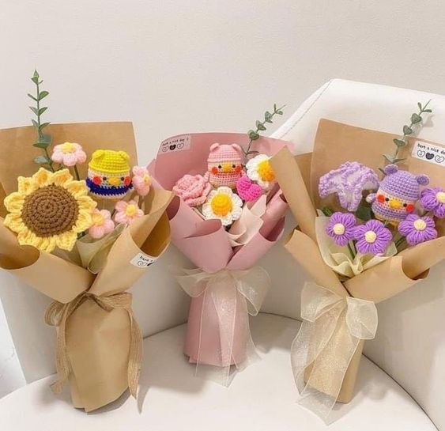

El arte del crochet no solo es una técnica de tejido, sino una forma de expresión personal que cada tejedor(a) aborda con una perspectiva única. Cada persona tiene una forma de pensar diferente en base a su experiencia. Desde que inicié en el mundo del crochet he descubierto una serie de beneficios y desafíos que definen esta actividad. A continuación mencionaré algunos contras y pros de tejer crochet.
Pros de tejer crochet
- Creatividad ilimitada El crochet es una forma de explorar y expandir nuestra creativad. Desde crear patrones hasta experimentar combinaciones de colores, puntos, tamaños, entre otros. Cada proyecto representa una expresión única de estilo y visión.
- Relajación y bienestar Más que una simple actividad tejer crochet también ayuda tanto en nuestra distracción como en la salud mental. Tejer crochet es un refugio para muchos de nosotros los tejedores, ya que nos ayuda a desconectar el estrés diario y encontrar paz interior.
- Regalos Significativos Uno de todos los beneficios que tiene el crochet es que tenemos la capacidad de crear regalos hechos a mano que transmiten un sentido de dedicación y aprecio. Cada proyecto que creamos transmite el amor, tiempo y esfuerzo que dedicamos en ellos, lo que los hace aún más especiales.
- Aprendizaje continuo El crochet es un arte que nunca se termina de conocer del todo, cada día podemos aprender algo nuevo sobre él. Cada proyecto es una oportunidad de perfeccionar nuestras habilidades y explorar técnicas nuevas. Esta capacidad nos inspira a seguir superando nuestros límites creativos.
Contras de tejer crochet
- Tiempo y esfuerzo Si bien el crochet nos ayuda a desestresarnos, es una actividad que requiere de mucho tiempo, paciencia y dedicación. Dependiendo del tamaño del proyecto pueden llevarnos hasta semanas hacerlos. Lo que es normal que nuestras manos se fatiguen, es por eso que es importante tener descansos, buena postura y paciencia.
- Costo de materiales Si queremos crear piezas de buena calidad es necesario utilizar materiales de calidad, los cuales son bastante costosos. Sin embargo, valen totalmente la pena.
- Organización y espacio Los materiales de crochet como hilos, ganchillos, entre otros, pueden ocupar bastante espacio, además de que es necesario mantenerlos organizados y cuidados para que sean accesibles. Esto nos va a garantizar un trabajo eficiente.
- Frustaciones y errores Como cualquier habilidad artística es normal que nos enfrentemos a desafíos y errores, lo que nos va a generar frustaciones. Es por eso que es importante entender que los errores son un proceso normal de aprendizaje y crecimiento, estos pueden ser bastante frustantes. Sin embargo, cada error es una oportubidad de crecer, aprender y mejorar nuestras habilidades.